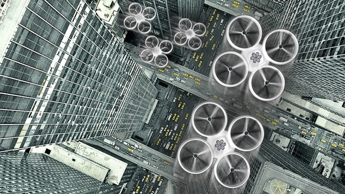

on
Cyber 2012: Crossing the Threshold
The evolution of the cyber domain is as fascinating as it is concerning. It is a perfect example of the complexity we constuct in our modern world that provides significant asymmetries in favor of those who choose to attack the system. In 2012, we witnessed the continued evolution of collection and attack capabilities to unprecedented levels. I thought it would be worthwhile to review some highlights from the past year that in my mind only bolster the case for strengthening community resilience before high consequence events occur.
The most notable cyber event of 2012 in my opinion was not a particular cyber act but rather an admission. Through this particular New York Times article by David Sanger, US officials confirmed the existence of a long-standing offensive cyber operation designed to degrade Iran’s nuclear enrichment program. Operation Olympic Games was responsible for the design and development of Stuxnet, malware specifically designed to target computer systems within Iran’s enrichment facilities. Based on available reporting, it appears Stuxnet worked as designed after being delivered to the target network that was isolated from the Internet. The United States apparently went through great lengths to map the targeted network and then to design and test malware tailored to the particular control systems present on the network.
With his decision, Obama realized he was establishing precedent in a new era of warfare. One that in some respects bears resemblance to the nuclear era. Within the cyber domain, there are a number of entities exercising mature offensive capabilities. At the same time, no one is in a position to credibly defend their networks against advanced adversaries. The lack of credible defense leads us to discuss active defense: the use of offensive action to defend against an identified threat. This begins to sound like mutually assured destruction from years past. Unfortunately the situation is complicated further by the lack of ability to attribute cyber attacks to their perpetrators. We stand vulnerable to counterpunches by others and won’t necessarily know where they’ve ultimately come from.
For some time now, attacks against our infrastructure have been a concern but not one that has garnered as much attention as it deserves in my opinion. In 2012, the tenor of the messaging seemed to change. This may have simply been a reflection of the desire to get new cybersecurity legislation passed. Yet whatever the motivation, it was very interesting to see senior government officials at the 2012 Aspen Security Forum speaking openly about the nature of the threat. In his hour long interview at the event, NSA Director General Alexander made specific reference to nation-state and non-state actors actively attempting to attack our critical infrastructure in ways that, if successful, could bring down key services for “weeks or months.” To hear his specific statement, listen to the following video starting at 13:00.

Alexander emphasizes the obvious in his remarks. Offensive actions of the nature we are employing today, such as those taken against SCADA systems, will at some point be directed back at the US. Cyberweapons that the US releases into the wild will be studied by others. Those lessons learned can then be leveraged in new cyberweapons developed by adversaries. If public reports are correct, Iran took little time to respond with attacks such as the Saudi Aramco computer sabotage incident. More will undoubtedly follow.
Given this threat context, it was encouraging to see new signs in 2012 of a growing acceptance of the following reality: the Internet’s complexity is beyond comprehension, thereby establishing a persistent asymmetry that can only be dealt with by redesigning the fundamentals of the network. Clearly this is an activity that will take time but at least movement is underway at DARPA to reconsider foundational design principles.

In the meantime, we are left to manage downside risk in a system we will never fully understand. The construction of additional complexity continues with the march toward the Internet of Things. As an example, consider Matternet, a bold vision for leveraging advances in unmanned aerial vehicles to dramatically transform the world’s transportation network with autonomous delivery of small payloads. In areas of the world where transportation networks remain woefully inadequate, such a network could have dramatic impact. From a security perspective, it undoubtedly introduces new challenges and concerns. I look forward to seeing how these tradeoffs are managed, assuming they are given the recognition they deserve.